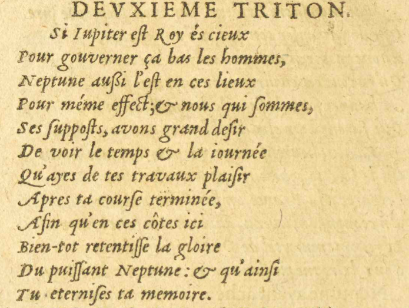

4/11
- En l'affaire important que d'vnun coeur vigoureux
- Hardi tu entreprens, forçant la violence
- D'ÆoleÉole
 Dieu de la mythologie grecque régissant les vents., qui toujours inconſstant & leger,
Dieu de la mythologie grecque régissant les vents., qui toujours inconſstant & leger, - Tantot adeſsquidés, † tantot pouſsſsé d'envie, † Mot de
- Veut te precipiter, & les tiensE09 : , au danger.


Sauvage
 Désignation de ceux habitant dans la nature, c'est-à-dire loin de la civilisation.,E11 E18 :
Désignation de ceux habitant dans la nature, c'est-à-dire loin de la civilisation.,E11 E18 : qui ſsigni-
fie Ami.
- Neptune
 Dieu d'origine latine des eaux vives et des sources, puis des mers. eſst vnun grand Dieu, qui cette ialouſiejalousie
Dieu d'origine latine des eaux vives et des sources, puis des mers. eſst vnun grand Dieu, qui cette ialouſiejalousie - Fera comme fumée en l'air évanouïr :E09 : ;
- Et nous ſses poſstillons, malgréE09 : malgrè l'effort d'ÆoleÉoleDieu de la mythologie grecque régissant les vents.
- Ferons en toutes parts de ton courage ouïr
- Le renom, qui des-jaE09 : desja en toutes terres vole.
DEVXIEMEDEUXIEME TRITON.
- Si IupiterJupiter
 Dieu romain qui gouverne la terre et le ciel, ainsi que tous les êtres vivants s'y
trouvant. eſst Roy és#4 cieux
Dieu romain qui gouverne la terre et le ciel, ainsi que tous les êtres vivants s'y
trouvant. eſst Roy és#4 cieux - Pour gouverner ça#9 bas les hommes,
- NeptuneDieu d'origine latine des eaux vives et des sources, puis des mers. auſssi l'eſst en ces lieux
- Pour méme effect; & nous qui ſsommes,E18 :
- Ses ſsupposE09 : ſsuppoſsts, avons grand deſsir
- De voir le temps & la iournéejournée
- Qu'ayes de tes travaux plaiſsir
- Apres ta courſse terminée,
- Afin qu'en ces côtes ici
- Bien-tot retentiſsſse la gloire
- Du puiſsſsant NeptuneDieu d'origine latine des eaux vives et des sources, puis des mers. : & qu'ainſsi
- Tu eterniſses ta memoire.
